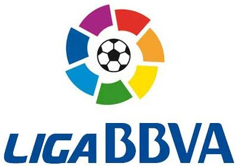
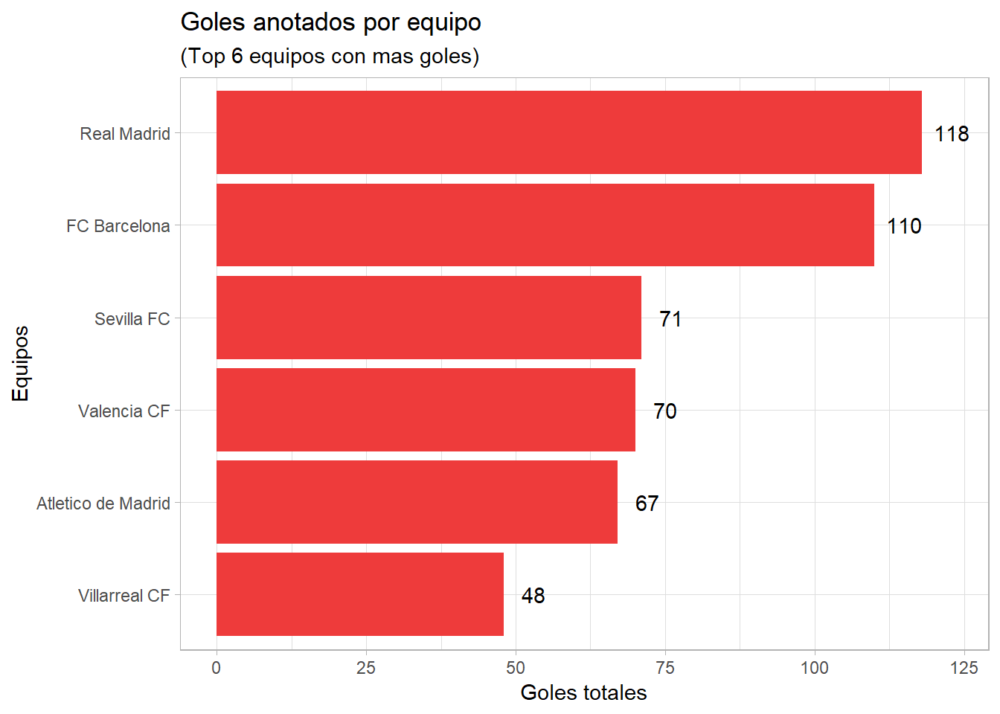
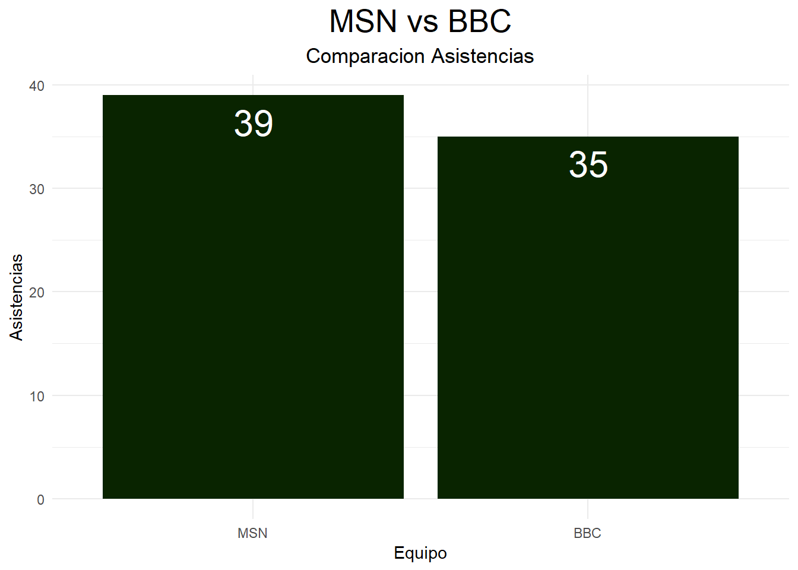
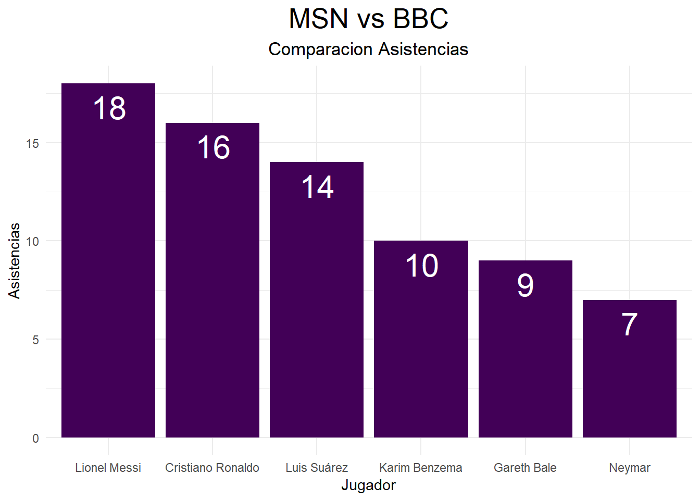

Analizando la liga española de la temporada 2014/15
trabajo BigData
futbol
Autor/a
Víctor Muñoz Barrasa (vicmuoz@alumni.uv.es)
Fecha de publicación
10 de enero de 2023

Logo
1. Introducción
Este trabajo se realiza con el fin de analizar las estadisticas de los equipos y jugadores de la primera division de la liga de Española en la temporada 2014/15. Considerada una de las 5 grandes ligas europeas que para muchos, sus 38 jornadas, la convierten en la mas competitiva y relevante del mundo, tambien gracias a su historia y a la participacion de tantos grandes clubes como Real Madrid, Barcelona, Valencia entre otros. Ilutraremos la tabla de clasificacion de cada equipo, el Campeon de la liga, los descensos a la segunda division y los equipos que alcanzaron las maximas competiciones europeas (Champions League y Europa League). Ademas estudiaremos los maximos goleadores de la temporada tanto por equipos como jugadores mediante la utilizacion de graficos ilustrativos. Por ultimo, realizaremos una comparacion entre los dos grandes tridentes del Real Madrid y Barcelona (MSN y BBC).
Los datos fueron obtenidos de diferentes fuentes: este repo de Github aquí, Wikipedia y ceroacero.es.
Código
#ESTOS SON LOS PAQUETES QUE HE UTILIZADO A LO LARGO DEL TRABAJOlibrary(tidyverse)library(dplyr)library(ggplot2)library(rio)library(kableExtra)library(wordcloud2)library(plotly)library(DT)library(gganimate)library(vembedr)# PRIMERO CARGO LOS DATOS QUE POSTERIORMENTE TRANSFORMARE PARA PODER ANALIZARLOS MEJORClasif <- rio::import(here::here("datos", "clasificacion_total.csv"))Puntospjornada <- rio::import(here::here("datos", "Puntospjornada.xlsx"))Goleadores <- rio::import(here::here("datos", "Maximos_goleadores.xlsx"))Asistencias <- rio::import(here::here("datos", "Asistencias.xlsx"))MSNBBCgoles <- rio::import(here::here("datos", "MSNBBC_goles.xlsx"))#AHORA LOS TRANSFORMOClasif <- Clasif %>%filter(Season %in%"2014-15")Clasif <- Clasif %>%select(Position, `Crest names`, Points, Matches, Won, Draw, Lost, Scored, Conceded, GoalDifference) %>%rename(Teams =`Crest names`)Clasif[c(3, 9, 19, 20), 2] <-c("Atletico de Madrid", "Malaga CF", "UD Almeria", "Cordoba CF")Clasif <- Clasif %>%mutate(Clasif2016 =case_when(Position =="1"~"Fase de grupos de la Liga de Campeones", Position =="2"~"Fase de grupos de la Liga de Campeones", Position =="3"~"Fase de grupos de la Liga de Campeones", Position =="5"~"Fase de grupos de la Liga de Campeones" , Position =="4"~"Play-offs de la Liga de Campeones", Position =="6"~"Fase de grupos de la Liga Europa", Position =="7"~" Tercera ronda previa de la Liga Europa", Position =="13"~"Descenso de categoria", Position =="19"~"Descenso de categoria", Position =="20"~"Descenso de categoria", TRUE~"NA"))Goles <- Clasif %>%select(Teams, Scored) %>%filter(Scored >=48) %>%slice_max(Scored, n =6)Relacion <- Clasif %>%select(Teams, Scored, Won) %>%slice_max(Scored, n =20)Puntospjornada <- rio::import(here::here("datos", "Puntospjornada.xlsx"))Puntospjornada <- Puntospjornada %>% tidyr::pivot_longer(cols =2:39, names_to ="Jornada")Puntospjornada <- Puntospjornada %>%rename(Puntos = value)Puntospjornada$Jornada <-as.numeric(Puntospjornada$Jornada)Puntospjornada <- Puntospjornada %>%group_by(Jornada) %>%arrange(Jornada, desc(Puntos)) %>%mutate(ranking =row_number()) %>%filter(ranking <=15)Goleadores <- Goleadores %>%select(Jugador, Equipo, Goles, PJ, Media, Min., `Min./Gol`) %>%slice(c(0:17)) Asistencias <- Asistencias %>%select(Jugador, Asist.) %>%slice(0:20)Comparacion <-full_join(Goleadores, Asistencias) %>%filter(Jugador %in%c("Cristiano Ronaldo", "Lionel Messi", "Neymar", "Luis Suárez", "Karim Benzema", "Gareth Bale"))Comparaciong <- Comparacion %>%select(Jugador, Equipo, Goles)Comparaciong <- Comparaciong %>%mutate(Equipo =ifelse(Equipo =="Fútbol Club Barcelona", "MSN", Equipo)) %>%mutate(Equipo =ifelse(Equipo =="Real Madrid Club de Fútbol", "BBC", Equipo))MSNBBCgoles <- MSNBBCgoles %>%rename(Equipo =`Etiquetas de fila`, Goles =`Suma de Goles`)Comparaciona <- Comparacion %>%select(Jugador, Equipo, Asist.)Comparaciona$Asist. <-as.numeric(Comparaciona$Asist.)Comparaciona <- Comparaciona %>%arrange(desc(Asist.))MSNBBCasistencias <- rio::import(here::here("datos", "MSNBBC_asistencias.xlsx"))
2. Tabla de la Liga BBVA de la temporada 2014/15
La temporada 2014/2015 fue un año impresionante en todos los sentidos. Dejo varios aspectos relevantes: lograr el FC Barcelona conseguir el titulo de campeon tras una dura batalla con el Real Madrid. El FC Barcelona conquistó su 23.er título de liga (su 5.º en las 7 últimas ediciones) y se quedó a 3 goles de igualar el récord de menos goles encajados en la Liga, que consiguió el Deportivo de La Coruña en la temporada 1993-1994, con 18 goles encajados. Junto a su quinta Champions, el Barcelona ganó su quinto doblete Liga-Champions, eso si se incluye el doblete Liga-Champions en 2009 en su triplete del 2009.
Código
kable(Clasif) %>% kableExtra::kable_styling(fixed_thead =list(enabled = T, background ="black")) %>%row_spec(row =0, color ="white") %>%column_spec(3, bold = T, color ="black", background ="chartreuse")
En el grafrico 2 podemos observar el numero de goles anotados por los 6 equipos que mas metieron en esta edicion. En cuanto al grafico 3, enseña la relacion entre goles y partidos ganados por los diferentes equipos y se puede ver que existe una relacion positiva.
p1 <-ggplot(Goles, aes(x =reorder(Teams, +Scored), y = Scored)) +geom_col(fill =c("brown2", "brown2", "brown2", "brown2", "brown2", "brown2")) p1 +labs(title ="Goles anotados por equipo", subtitle ="(Top 6 equipos con mas goles)",x ="Equipos",y ="Goles totales") +theme_light() +geom_text(aes(label = Scored),nudge_y =5, colour ="black") +coord_flip()

Código
p2 <-ggplot(Relacion, aes(Scored, Won, color = Teams)) +geom_point() +geom_smooth()ggplotly(p2)
Máximos Goleadores
En esta tabla podemos observar a los maximos anotadores y las estadisticas de cada jugador respecto a los partidos y minutos jugados en todos los partidos de la temporada. En el, como maximo goleador aparece el jugador portugues Cristiano Ronaldo (Real Madrid) con 48 dianas, seguido de un Lionel Messi (FC barcelona) con 43 goles y terminando el podio el jugador brasileño Neymar Jr (FC Barcelona) con 22.
El maximo asistidor es el futbolista argentino Lionel Messi con unas 18 asistencias seguido de Cristiano y Luis Suarez. El astroargentino considerado el mejor jugador de la epoca ha sido el maximo asistente y el segundo maximo golkeador.
A continuacion, se realizara un estudio de comparacion entre los dos grandes tridentes de esta liga, centrandonos en los goles y asistencias, tanto individualmente como cinjuntamente.
p5 <-ggplot(MSNBBCasistencias) +aes(x =reorder(Equipo, desc(Asistencias)), y = Asistencias) +geom_col(fill ="#092400") +labs(x ="Equipo", y ="Asistencias", title ="MSN vs BBC", subtitle ="Comparacion Asistencias") +theme_minimal() +theme(plot.title =element_text(size = 20L, hjust =0.5), plot.subtitle =element_text(size = 13L, hjust =0.5))+geom_text(aes(label=Asistencias), vjust=1.5,hjust=0.49, color="white", position =position_dodge(0.1), size=8 )p5

Código
p6 <-ggplot(Comparaciona) +aes(x =reorder(Jugador, desc(Asist.)), y = Asist.) +geom_col(fill ="#420057") +labs(x ="Jugador", y ="Asistencias", title ="MSN vs BBC", subtitle ="Comparacion Asistencias") +theme_minimal() +theme(plot.title =element_text(size = 20L, hjust =0.5), plot.subtitle =element_text(size = 13L, hjust =0.5))+geom_text(aes(label=Asist.), vjust=1.5,hjust=0.49, color="white", position =position_dodge(0.1), size=8 )p6

Conclusiones
Finalmente, se puede confirmar que esta liga española ha sido una de las mas grandes de la historia, y dificilmente ninguna otra va poder acercarse a tal nivel.
Referencias
Wikipedia
Cero a cero
Ejecutar el código
---title: "La Liga BBVA 2014/15"description: | Analizando la liga española de la temporada 2014/15author: Víctor Muñoz Barrasa (vicmuoz@alumni.uv.es) #--date: 2023-01-10 #--categories: [trabajo BigData, futbol] #--image: "./imagenes/imagen_01.png"title-block-banner: true #- {true, false, "green","#AA0000"}title-block-banner-color: "skyblue" #-"#FFFFFF" toc: truetoc-location: lefttoc-depth: 3smooth-scroll: trueformat: html: #backgroundcolor: "#F1F3F4" #standalone: true link-external-newwindow: true #css: ./assets/my_css_file.css #- CUIDADO!!!!code-tools: truecode-link: true------</center>{width="300" height="250"}</center>---## 1. Introducción Este trabajo se realiza con el fin de analizar las estadisticas de los equipos y jugadores de la primera division de la liga de Española en la temporada 2014/15. Considerada una de las 5 grandes ligas europeas que para muchos, sus 38 jornadas, la convierten en la mas competitiva y relevante del mundo, tambien gracias a su historia y a la participacion de tantos grandes clubes como Real Madrid, Barcelona, Valencia entre otros. Ilutraremos la tabla de clasificacion de cada equipo, el Campeon de la liga, los descensos a la segunda division y los equipos que alcanzaron las maximas competiciones europeas (Champions League y Europa League). Ademas estudiaremos los maximos goleadores de la temporada tanto por equipos como jugadores mediante la utilizacion de graficos ilustrativos. Por ultimo, realizaremos una comparacion entre los dos grandes tridentes del Real Madrid y Barcelona (MSN y BBC).## Datos del trabajo::: {.panel-tabset}## Fuentes de los DatosLos datos fueron obtenidos de diferentes fuentes: este repo de Github [aquí](https://github.com/imontava10/trabajo_BigData), Wikipedia y ceroacero.es.## Códigos```{r}#| code-fold: true#ESTOS SON LOS PAQUETES QUE HE UTILIZADO A LO LARGO DEL TRABAJOlibrary(tidyverse)library(dplyr)library(ggplot2)library(rio)library(kableExtra)library(wordcloud2)library(plotly)library(DT)library(gganimate)library(vembedr)# PRIMERO CARGO LOS DATOS QUE POSTERIORMENTE TRANSFORMARE PARA PODER ANALIZARLOS MEJORClasif <- rio::import(here::here("datos", "clasificacion_total.csv"))Puntospjornada <- rio::import(here::here("datos", "Puntospjornada.xlsx"))Goleadores <- rio::import(here::here("datos", "Maximos_goleadores.xlsx"))Asistencias <- rio::import(here::here("datos", "Asistencias.xlsx"))MSNBBCgoles <- rio::import(here::here("datos", "MSNBBC_goles.xlsx"))#AHORA LOS TRANSFORMOClasif <- Clasif %>%filter(Season %in%"2014-15")Clasif <- Clasif %>%select(Position, `Crest names`, Points, Matches, Won, Draw, Lost, Scored, Conceded, GoalDifference) %>%rename(Teams =`Crest names`)Clasif[c(3, 9, 19, 20), 2] <-c("Atletico de Madrid", "Malaga CF", "UD Almeria", "Cordoba CF")Clasif <- Clasif %>%mutate(Clasif2016 =case_when(Position =="1"~"Fase de grupos de la Liga de Campeones", Position =="2"~"Fase de grupos de la Liga de Campeones", Position =="3"~"Fase de grupos de la Liga de Campeones", Position =="5"~"Fase de grupos de la Liga de Campeones" , Position =="4"~"Play-offs de la Liga de Campeones", Position =="6"~"Fase de grupos de la Liga Europa", Position =="7"~" Tercera ronda previa de la Liga Europa", Position =="13"~"Descenso de categoria", Position =="19"~"Descenso de categoria", Position =="20"~"Descenso de categoria", TRUE~"NA"))Goles <- Clasif %>%select(Teams, Scored) %>%filter(Scored >=48) %>%slice_max(Scored, n =6)Relacion <- Clasif %>%select(Teams, Scored, Won) %>%slice_max(Scored, n =20)Puntospjornada <- rio::import(here::here("datos", "Puntospjornada.xlsx"))Puntospjornada <- Puntospjornada %>% tidyr::pivot_longer(cols =2:39, names_to ="Jornada")Puntospjornada <- Puntospjornada %>%rename(Puntos = value)Puntospjornada$Jornada <-as.numeric(Puntospjornada$Jornada)Puntospjornada <- Puntospjornada %>%group_by(Jornada) %>%arrange(Jornada, desc(Puntos)) %>%mutate(ranking =row_number()) %>%filter(ranking <=15)Goleadores <- Goleadores %>%select(Jugador, Equipo, Goles, PJ, Media, Min., `Min./Gol`) %>%slice(c(0:17)) Asistencias <- Asistencias %>%select(Jugador, Asist.) %>%slice(0:20)Comparacion <-full_join(Goleadores, Asistencias) %>%filter(Jugador %in%c("Cristiano Ronaldo", "Lionel Messi", "Neymar", "Luis Suárez", "Karim Benzema", "Gareth Bale"))Comparaciong <- Comparacion %>%select(Jugador, Equipo, Goles)Comparaciong <- Comparaciong %>%mutate(Equipo =ifelse(Equipo =="Fútbol Club Barcelona", "MSN", Equipo)) %>%mutate(Equipo =ifelse(Equipo =="Real Madrid Club de Fútbol", "BBC", Equipo))MSNBBCgoles <- MSNBBCgoles %>%rename(Equipo =`Etiquetas de fila`, Goles =`Suma de Goles`)Comparaciona <- Comparacion %>%select(Jugador, Equipo, Asist.)Comparaciona$Asist. <-as.numeric(Comparaciona$Asist.)Comparaciona <- Comparaciona %>%arrange(desc(Asist.))MSNBBCasistencias <- rio::import(here::here("datos", "MSNBBC_asistencias.xlsx"))```:::---## 2. Tabla de la Liga BBVA de la temporada 2014/15La temporada 2014/2015 fue un año impresionante en todos los sentidos. Dejo varios aspectos relevantes: lograr el FC Barcelona conseguir el titulo de campeon tras una dura batalla con el Real Madrid. El FC Barcelona conquistó su 23.er título de liga (su 5.º en las 7 últimas ediciones) y se quedó a 3 goles de igualar el récord de menos goles encajados en la Liga, que consiguió el Deportivo de La Coruña en la temporada 1993-1994, con 18 goles encajados. Junto a su quinta Champions, el Barcelona ganó su quinto doblete Liga-Champions, eso si se incluye el doblete Liga-Champions en 2009 en su triplete del 2009.```{r}#| code-fold: truekable(Clasif) %>% kableExtra::kable_styling(fixed_thead =list(enabled = T, background ="black")) %>%row_spec(row =0, color ="white") %>%column_spec(3, bold = T, color ="black", background ="chartreuse") ```---</center>{width="500" height="400"}</center>## Evolución de la clasificación por jornada```{r}#| code-fold: trueanimacion <- Puntospjornada %>%ggplot() +geom_col(aes(ranking, Puntos, fill = Equipos)) +geom_text(aes(ranking, Puntos, label = Puntos), hjust=-0.1) +geom_text(aes(ranking, y=0 , label = Equipos), hjust=1.1) +geom_text(aes(x=15, y=max(Puntos) , label =as.factor(Jornada)), vjust =0.2, alpha =0.5, col ="gray", size =20) +coord_flip(clip ="off", expand =FALSE) +scale_x_reverse() +theme_minimal() +theme(panel.grid =element_blank(), legend.position ="none",axis.ticks.y =element_blank(),axis.title.y =element_blank(),axis.text.y =element_blank(),plot.margin =margin(1, 4, 1, 3, "cm") ) +transition_states(Jornada, state_length =0, transition_length =2) +enter_fade() +exit_fade() +ease_aes('quadratic-in-out') animate(animacion, width =700, height =432, fps =25, duration =15, rewind =FALSE)```---## 3. Analisis Goles Anotados## Equipos con mas golesEn el grafrico 2 podemos observar el numero de goles anotados por los 6 equipos que mas metieron en esta edicion. En cuanto al grafico 3, enseña la relacion entre goles y partidos ganados por los diferentes equipos y se puede ver que existe una relacion positiva.::: {.panel-tabset}## Gráfico 2```{r}#| code-fold: truep1 <-ggplot(Goles, aes(x =reorder(Teams, +Scored), y = Scored)) +geom_col(fill =c("brown2", "brown2", "brown2", "brown2", "brown2", "brown2")) p1 +labs(title ="Goles anotados por equipo", subtitle ="(Top 6 equipos con mas goles)",x ="Equipos",y ="Goles totales") +theme_light() +geom_text(aes(label = Scored),nudge_y =5, colour ="black") +coord_flip()```## Gráfico 3```{r}#| code-fold: truep2 <-ggplot(Relacion, aes(Scored, Won, color = Teams)) +geom_point() +geom_smooth()ggplotly(p2)```:::---## Máximos GoleadoresEn esta tabla podemos observar a los maximos anotadores y las estadisticas de cada jugador respecto a los partidos y minutos jugados en todos los partidos de la temporada. En el, como maximo goleador aparece el jugador portugues Cristiano Ronaldo (Real Madrid) con 48 dianas, seguido de un Lionel Messi (FC barcelona) con 43 goles y terminando el podio el jugador brasileño Neymar Jr (FC Barcelona) con 22.```{r}#| code-fold: truedatatable(Goleadores, rownames =FALSE, filter ="top") %>%formatStyle(columns =3, backgroundColor ="lightgreen")``````{r}#| code-fold: trueembed_url("https://www.youtube.com/watch?v=Q8ucqILcYzY")```---## 4. Analisis AsistenciasEl maximo asistidor es el futbolista argentino Lionel Messi con unas 18 asistencias seguido de Cristiano y Luis Suarez. El astroargentino considerado el mejor jugador de la epoca ha sido el maximo asistente y el segundo maximo golkeador.```{r}#| code-fold: truedatatable(Asistencias, rownames =FALSE, filter ="top") %>%formatStyle(columns =3, backgroundColor ="lightgreen")```## 5. Analisis MSN vs BBCA continuacion, se realizara un estudio de comparacion entre los dos grandes tridentes de esta liga, centrandonos en los goles y asistencias, tanto individualmente como cinjuntamente.## Goles::: {.panel-tabset}## Gráfico 4```{r}#| code-fold: truep3 <-ggplot(MSNBBCgoles) +aes(x =reorder(Equipo, desc(Goles)), y = Goles) +geom_col(fill ="#092400") +labs(x ="Equipo", y ="Goles", title ="MSN vs BBC", subtitle ="Comparacion Goles") +theme_minimal() +theme(plot.title =element_text(size = 20L, hjust =0.5), plot.subtitle =element_text(size = 13L, hjust =0.5))+geom_text(aes(label=Goles), vjust=1.5,hjust=0.49, color="white", position =position_dodge(0.1), size=8 )p3```## Gráfico 5```{r}#| code-fold: truep4 <-ggplot(Comparacion) +aes(x =reorder(Jugador, desc(Goles)), y = Goles) +geom_col(fill ="#420057") +labs(x ="Jugador", y ="Goles", title ="MSN vs BBC", subtitle ="Comparacion Goles") +theme_minimal() +theme(plot.title =element_text(size = 20L, hjust =0.5), plot.subtitle =element_text(size = 13L, hjust =0.5))+geom_text(aes(label=Goles), vjust=1.5,hjust=0.49, color="white", position =position_dodge(0.1), size=8 )p4```:::---## Asistencias::: {.panel-tabset}## Gráfico 6```{r}#| code-fold: truep5 <-ggplot(MSNBBCasistencias) +aes(x =reorder(Equipo, desc(Asistencias)), y = Asistencias) +geom_col(fill ="#092400") +labs(x ="Equipo", y ="Asistencias", title ="MSN vs BBC", subtitle ="Comparacion Asistencias") +theme_minimal() +theme(plot.title =element_text(size = 20L, hjust =0.5), plot.subtitle =element_text(size = 13L, hjust =0.5))+geom_text(aes(label=Asistencias), vjust=1.5,hjust=0.49, color="white", position =position_dodge(0.1), size=8 )p5```## Gráfico 7```{r}#| code-fold: truep6 <-ggplot(Comparaciona) +aes(x =reorder(Jugador, desc(Asist.)), y = Asist.) +geom_col(fill ="#420057") +labs(x ="Jugador", y ="Asistencias", title ="MSN vs BBC", subtitle ="Comparacion Asistencias") +theme_minimal() +theme(plot.title =element_text(size = 20L, hjust =0.5), plot.subtitle =element_text(size = 13L, hjust =0.5))+geom_text(aes(label=Asist.), vjust=1.5,hjust=0.49, color="white", position =position_dodge(0.1), size=8 )p6```:::## ConclusionesFinalmente, se puede confirmar que esta liga española ha sido una de las mas grandes de la historia, y dificilmente ninguna otra va poder acercarse a tal nivel.## Referencias- Wikipedia- Cero a cero